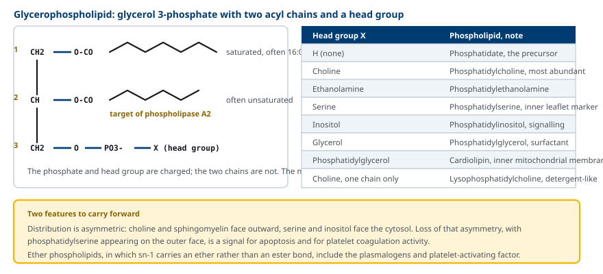
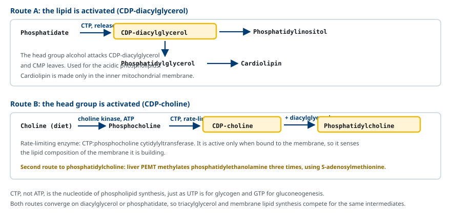
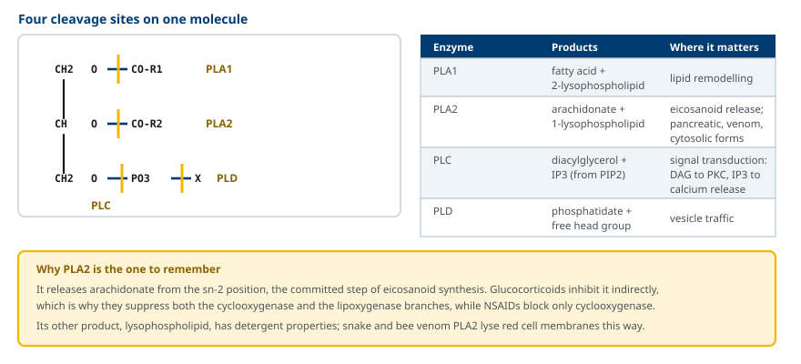
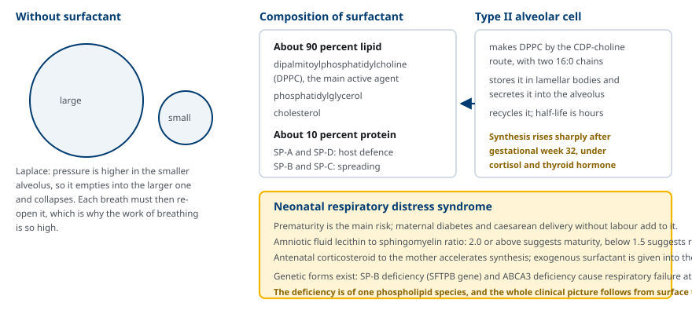
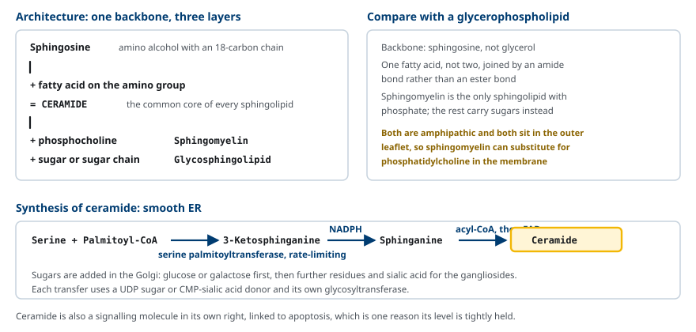
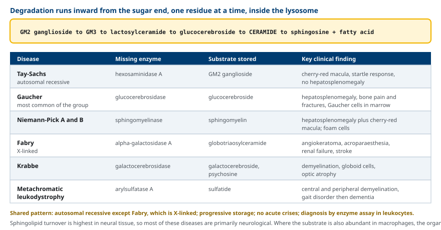

M02-W08-L03 · 대사생화학 · 지질대사
Phospholipid·sphingolipid 대사
Phospholipid and Sphingolipid Metabolism
학습목표
- Glycerophospholipid의 구조와 머리 부분에 따른 분류, 막에서의 비대칭 분포를 설명한다.
- CDP-diacylglycerol 경로와 CDP-choline 경로를 기질 활성화 방식으로 구분해 설명한다.
- Phospholipase A1·A2·C·D의 작용 위치와 산물, 그리고 PLA2의 약리학적 의미를 설명한다.
- 폐 surfactant의 조성과 합성 조절을 설명하고 신생아 호흡곤란증후군의 기전과 검사 지표를 연결한다.
- Ceramide를 중심으로 sphingolipid의 구조와 합성 경로를 설명한다.
- 주요 sphingolipidosis 여섯 가지의 결손 효소, 축적 물질, 특징적 소견을 연결한다.
선수지식
- M02-W08-L01 Triacylglycerol 대사와 지방 동원 — phosphatidate와 diacylglycerol의 생성
- M01-W03-L02 생체막의 구조 — 이중층과 막 지질의 배열
- M02-W07-L02 지방산 합성과 조절 — palmitoyl-CoA의 공급
강의 구성
- 1. 막 지질로서의 phospholipid와 sphingolipid
- 2. Glycerophospholipid의 구조와 분포
- 3. Phospholipid의 합성: 두 가지 활성화 방식
- 4. Phospholipase와 phospholipid의 분해
- 5. 폐 surfactant와 신생아 호흡곤란증후군
- 6. Sphingolipid의 구조와 합성
- 7. Sphingolipidosis: 분해가 막히는 질환
- 8. 치료 전략과 임상적 연결
1. 막 지질로서의 phospholipid와 sphingolipid
지금까지 다룬 triacylglycerol은 저장 지질이다. 이 수업의 지질은 역할이 다르다. Phospholipid와 sphingolipid는 저장되지 않고 구조와 신호에 쓰인다.
세 가지 역할로 묶인다.
- 막의 골격: 모든 생체막은 amphipathic 지질의 이중층이다. Phospholipid와 sphingolipid가 그 이중층을 이룬다. Triacylglycerol은 전하가 없어 이중층을 만들지 못하고 뭉친다.
- 계면 활성: 폐의 alveolus 표면에서 표면 장력을 낮추는 surfactant의 주성분이 특정 phospholipid다.
- 신호 전달의 전구체: Phosphatidylinositol은 IP₃와 diacylglycerol의 공급원이고, sn-2의 arachidonate는 eicosanoid의 공급원이며, ceramide와 sphingosine 1-phosphate는 그 자체가 신호 분자다.
두 계열은 설계가 다르다. Glycerophospholipid는 glycerol 골격에 지방산 두 개가 ester 결합으로 붙고, sphingolipid는 sphingosine 골격에 지방산 하나가 amide 결합으로 붙는다. 그러나 두 계열 모두 한쪽은 소수성, 다른 쪽은 친수성인 amphipathic 분자이고, 막에서 서로를 대체할 수 있다.
막 지질은 끊임없이 합성되고 분해된다. 이 회전이 막의 조성을 바꾸고 신호 분자를 공급한다. 그래서 이 수업의 질환은 두 유형으로 나뉜다. 합성이 안 되는 질환(폐 surfactant 결핍)과 분해가 안 되는 질환(sphingolipidosis)이다.
2. Glycerophospholipid의 구조와 분포
Glycerophospholipid는 glycerol 3-phosphate를 골격으로 한다. sn-1과 sn-2에 지방산이, sn-3의 인산에 머리 부분(head group)이 붙는다.
지방산의 조성에는 규칙이 있다. sn-1에는 흔히 포화지방산이, sn-2에는 흔히 불포화지방산이 온다. 특히 sn-2의 arachidonate가 eicosanoid의 공급원이 되므로 이 위치가 약리학적으로 중요하다.
머리 부분이 종류를 결정한다.
| 머리 부분 | 이름 | 주요 역할 |
|---|---|---|
| 없음(인산만) | Phosphatidate | 모든 glycerophospholipid와 triacylglycerol의 전구체 |
| Choline | Phosphatidylcholine | 가장 풍부한 막 phospholipid, surfactant의 주성분 |
| Ethanolamine | Phosphatidylethanolamine | 막 안쪽 면에 많다 |
| Serine | Phosphatidylserine | 안쪽 면에 있다가 밖으로 나오면 신호가 된다 |
| Inositol | Phosphatidylinositol | PIP₂를 거쳐 IP₃와 diacylglycerol을 공급 |
| Glycerol | Phosphatidylglycerol | Surfactant의 구성 성분 |
| Phosphatidylglycerol | Cardiolipin | 미토콘드리아 내막에만 있다 |

막에서의 분포는 비대칭이다. Phosphatidylcholine과 sphingomyelin은 바깥 면에 많고, phosphatidylethanolamine과 phosphatidylserine, phosphatidylinositol은 세포질 쪽 면에 많다. 이 비대칭은 ATP를 쓰는 flippase와 floppase가 유지한다.
비대칭이 깨지는 것 자체가 신호다. Phosphatidylserine이 바깥 면에 나타나면 대식세포가 이를 인식해 세포자멸사한 세포를 제거하고, 혈소판에서는 응고 인자 복합체가 조립되는 표면이 된다. 항인지질 항체 증후군에서 자가항체가 인식하는 것도 이 노출된 음전하 지질이다.
Ether phospholipid도 알아둔다. sn-1이 ester 대신 ether 결합인 분자들로, plasmalogen(심장과 신경 수초에 많다)과 platelet-activating factor(PAF)가 여기에 속한다. PAF는 극미량으로 혈소판 응집과 호중구 활성화, 혈압 저하를 일으키는 강력한 매개물질이다. Ether 결합은 peroxisome에서 만들어지므로 peroxisome 생합성 결함 질환에서 plasmalogen이 부족해진다.
3. Phospholipid의 합성: 두 가지 활성화 방식
Phospholipid 합성의 공통 원리는 반응 전에 한쪽을 nucleotide로 활성화한다는 것이다. 어느 쪽을 활성화하는지에 따라 경로가 둘로 나뉘며, 두 경로 모두 CTP를 쓴다.
(1) 지질을 활성화하는 경로 — CDP-diacylglycerol
Phosphatidate가 CTP와 반응해 CDP-diacylglycerol이 되고, 여기에 머리 부분의 알코올이 결합한다. CMP가 떨어져 나간다.
- + inositol → phosphatidylinositol
- + glycerol 3-phosphate → phosphatidylglycerol → + CDP-diacylglycerol → cardiolipin
이 경로는 음전하를 띤 산성 phospholipid에 쓰인다. Cardiolipin은 미토콘드리아 내막에서만 만들어지고 거기에만 있다.
(2) 머리 부분을 활성화하는 경로 — CDP-choline
Choline이 먼저 인산화되어 phosphocholine이 되고, 이것이 CTP와 반응해 CDP-choline이 된다. 그 다음 diacylglycerol과 반응해 phosphatidylcholine이 된다.
이 경로의 rate-limiting step은 CTP:phosphocholine cytidylyltransferase다. 이 효소는 막에 결합했을 때만 활성을 가지므로, 자신이 만들고 있는 막의 지질 조성을 감지해 합성량을 조절한다.

Phosphatidylcholine에는 두 번째 공급 경로가 있다. 간에서 PEMT(phosphatidylethanolamine N-methyltransferase)가 phosphatidylethanolamine에 methyl기를 세 번 붙여 phosphatidylcholine을 만든다. Methyl 공여체는 S-adenosylmethionine이다. 식이 choline이 부족할 때 이 경로가 중요해지며, 간에서 phosphatidylcholine이 부족하면 VLDL을 조립하지 못해 지방간이 생긴다. 이것이 choline을 필수 영양소로 보는 근거다.
Phosphatidylserine은 phosphatidylethanolamine의 ethanolamine을 serine으로 교환하는 반응으로 만들어지고, 반대 방향의 decarboxylation으로 다시 phosphatidylethanolamine이 된다.
4. Phospholipase와 phospholipid의 분해
Phospholipid를 분해하는 효소는 작용 위치에 따라 이름이 붙는다. 한 분자에 네 개의 절단 지점이 있다.
| 효소 | 절단 위치 | 산물 |
|---|---|---|
| Phospholipase A1 | sn-1의 ester | 지방산 + 2-lysophospholipid |
| Phospholipase A2 | sn-2의 ester | 지방산(흔히 arachidonate) + 1-lysophospholipid |
| Phospholipase C | glycerol과 인산 사이 | Diacylglycerol + 인산화된 머리 부분(IP₃) |
| Phospholipase D | 인산과 머리 부분 사이 | Phosphatidate + 유리 머리 부분 |

Phospholipase A2가 임상적으로 가장 중요하다. 세 가지 이유가 있다.
- Eicosanoid 합성의 첫 단계다. sn-2에서 arachidonate를 떼어 내는 반응이 cyclooxygenase와 lipoxygenase 경로로 들어가는 유일한 입구다. Glucocorticoid는 PLA2의 활성을 억제해 두 경로를 함께 끄고, NSAID는 cyclooxygenase만 억제한다. 작용 지점의 차이가 두 약물의 효과 범위 차이를 설명한다.
- 췌장 소화효소다. 소장에서 식이 phospholipid를 분해한다. 활성형이 아닌 proenzyme으로 분비되어 trypsin에 의해 활성화된다.
- 독성 단백질이다. 뱀독과 벌독의 PLA2는 막 phospholipid를 분해해 적혈구를 파괴한다. 산물인 lysophospholipid 자체도 계면활성 성질이 있어 막을 손상한다.
Phospholipase C는 신호 전달의 중심이다. Gq 결합 수용체가 활성화되면 PLC가 PIP₂를 가수분해해 IP₃와 diacylglycerol을 만든다. IP₃는 소포체에서 Ca²⁺를 방출시키고, diacylglycerol은 protein kinase C를 활성화한다. 하나의 막 지질이 두 개의 신호 분자로 갈라진다.
5. 폐 surfactant와 신생아 호흡곤란증후군
Alveolus의 표면은 물로 덮여 있고, 물의 표면 장력은 alveolus를 수축시키는 힘으로 작용한다. Laplace의 관계에 따르면 압력은 반지름에 반비례하므로, 표면 장력이 그대로이면 작은 alveolus의 내부 압력이 더 높아져 큰 alveolus로 공기가 빠져나가며 허탈된다.
폐 surfactant가 이 문제를 해결한다. 질량의 약 90%가 지질이고 10%가 단백질이다.
- 지질에서 가장 중요한 성분은 dipalmitoylphosphatidylcholine(DPPC)이다. sn-1과 sn-2에 모두 palmitate(16:0)가 붙은 phosphatidylcholine으로, 두 사슬이 모두 포화·직선이어서 계면에 빽빽이 들어가 표면 장력을 가장 효과적으로 낮춘다.
- 그 밖에 phosphatidylglycerol과 cholesterol이 있다.
- 단백질은 SP-A와 SP-D(선천 면역 기능), SP-B와 SP-C(지질의 퍼짐을 돕는다)다.

Surfactant는 type II alveolar cell이 CDP-choline 경로로 만들어 lamellar body에 저장한 뒤 분비하고, 회수해 재활용한다. 생산은 임신 32주 이후 급격히 늘어나며, cortisol과 thyroid hormone이 이를 촉진한다.
신생아 호흡곤란증후군(neonatal respiratory distress syndrome)은 surfactant 부족으로 생긴다. 주 위험 요인은 조산이고, 산모의 당뇨병과 진통 없는 제왕절개가 위험을 높인다. 산모의 당뇨병이 위험 요인인 이유는 태아의 고insulin 상태가 surfactant 합성을 지연시키기 때문이다.
임상적 요점은 다음과 같다.
- 성숙도 평가: 양수의 lecithin/sphingomyelin(L/S) 비를 쓴다. Sphingomyelin 농도는 임신 기간에 거의 일정한데 lecithin(phosphatidylcholine)은 32주 이후 급증하므로 비가 올라간다. 2.0 이상이면 성숙, 1.5 미만이면 위험으로 본다. Phosphatidylglycerol의 존재도 성숙 지표다.
- 예방: 조산이 예상되면 산모에게 corticosteroid를 투여해 태아의 surfactant 합성을 가속한다.
- 치료: 기관 내로 외인성 surfactant를 투여하고 지속적 양압 호흡을 유지한다.
6. Sphingolipid의 구조와 합성
Sphingolipid는 골격이 glycerol이 아니라 sphingosine이다. Sphingosine은 탄소 18개의 사슬을 가진 아미노 alcohol이다.
구조는 세 층으로 이해한다.
1. Sphingosine에 지방산 하나가 아미노기와 amide 결합으로 붙으면 ceramide가 된다. Ceramide는 모든 sphingolipid의 공통 핵이다. 2. Ceramide에 phosphocholine이 붙으면 sphingomyelin이 된다. Sphingolipid 가운데 인산을 가진 유일한 분자다. 3. Ceramide에 당이 붙으면 glycosphingolipid가 된다. 당이 하나면 cerebroside, 당 사슬에 sialic acid가 포함되면 ganglioside, sulfate가 붙으면 sulfatide다.

합성은 smooth ER에서 시작한다.
1. Serine palmitoyltransferase가 serine과 palmitoyl-CoA를 결합해 3-ketosphinganine을 만든다. Rate-limiting step이다. 2. NADPH가 환원해 sphinganine(dihydrosphingosine)이 된다. 3. 지방산 acyl-CoA가 아미노기에 붙어 dihydroceramide가 된다. 4. FAD 의존 desaturase가 이중결합을 넣어 ceramide를 완성한다.
이후 당의 부착은 Golgi에서 일어나며, UDP-당이나 CMP-sialic acid를 공여체로 쓰는 glycosyltransferase가 하나씩 붙인다. 당 사슬의 조성이 세포 표면의 식별 표지를 만들고, ABO 혈액형 항원도 glycosphingolipid 위에 만들어진다.
Sphingolipid의 분포에는 조직 편향이 있다. 신경 조직에 특히 많고, 뇌의 수초(myelin)에는 galactocerebroside와 sulfatide가 풍부하다. 그래서 sphingolipid 대사 이상은 주로 신경계 질환으로 나타난다.
Ceramide와 그 유도체는 신호 분자이기도 하다. Ceramide는 세포자멸사와 성장 억제 신호에, sphingosine 1-phosphate는 세포 생존, 혈관 형성, 림프구 이동에 관여한다. 다발성 경화증 치료제 fingolimod는 sphingosine 1-phosphate 수용체의 조절제로, 림프구가 림프절에서 나오지 못하게 한다.
7. Sphingolipidosis: 분해가 막히는 질환
Sphingolipid의 분해는 lysosome에서 일어난다. 분해는 당 사슬의 바깥쪽부터 한 잔기씩 안으로 진행하고, 각 단계마다 전용 가수분해효소가 있다. 마지막에 ceramide가 sphingosine과 지방산으로 갈라진다.
경로가 순차적이므로 어느 효소 하나가 없으면 그 효소의 기질이 lysosome에 쌓인다. 이것이 sphingolipidosis(lysosomal storage disease의 한 군)다.

| 질환 | 결손 효소 | 축적 물질 | 특징 소견 |
|---|---|---|---|
| Tay-Sachs | Hexosaminidase A | GM2 ganglioside | Cherry-red macula, 소리에 대한 과도한 놀람 반응, 장기 비대 없음 |
| Gaucher | Glucocerebrosidase | Glucocerebroside | 간비장 비대, 뼈 통증과 병적 골절, 골수의 Gaucher cell |
| Niemann-Pick A·B | Sphingomyelinase | Sphingomyelin | 간비장 비대 + cherry-red macula, foam cell |
| Fabry | alpha-Galactosidase A | Globotriaosylceramide | X 연관, angiokeratoma, 손발의 작열통, 신부전, 뇌졸중 |
| Krabbe | Galactocerebrosidase | Galactocerebroside, psychosine | 탈수초, globoid cell, 시신경 위축 |
| Metachromatic leukodystrophy | Arylsulfatase A | Sulfatide | 중추·말초 탈수초, 보행 장애 후 인지 저하 |
이 질환군의 공통 특징은 다음과 같다.
- 유전 양식: Fabry만 X 연관이고 나머지는 상염색체 열성이다. 시험에서 가장 자주 묻는 구분이다.
- 진행 양식: 급성 대사 위기 없이 서서히 진행한다. 유기산 대사 이상처럼 공복이나 감염에서 갑자기 악화하지 않는다.
- 발현 조직: Sphingolipid 회전이 가장 많은 신경 조직이 주로 영향을 받는다. 축적 물질이 대식세포에도 많으면 간비장 비대가 함께 나타난다.
- 진단: 백혈구나 섬유아세포에서 효소 활성을 측정한다. 특정 집단에서 보인자 빈도가 높아(Tay-Sachs와 Gaucher의 Ashkenazi 유대인 집단) 보인자 선별검사가 이루어진다.
감별의 요점을 묶으면 기억이 쉬워진다. Cherry-red macula가 있고 장기 비대가 없으면 Tay-Sachs, 있으면 Niemann-Pick이다. 간비장 비대와 뼈 병변이 두드러지고 신경 증상이 없으면 Gaucher 1형이다. 성인에서 손발의 통증, 피부 병변, 단백뇨가 함께 있고 가족력이 남성에 치우쳐 있으면 Fabry다.
8. 치료 전략과 임상적 연결
Sphingolipidosis의 치료는 네 가지 전략으로 나뉘며, 각각이 경로의 다른 지점에 작용한다.
| 전략 | 작용 지점 | 예 | 한계 |
|---|---|---|---|
| 효소 대체 요법(ERT) | 결손 효소를 정맥으로 보충 | Gaucher(imiglucerase), Fabry(agalsidase) | 단백질이 혈액뇌장벽을 넘지 못해 신경 증상에 효과가 거의 없다 |
| 기질 감소 요법(SRT) | 합성을 억제해 유입을 줄인다 | Gaucher(miglustat, eliglustat) | 효과가 완전하지 않다 |
| Chaperone 요법 | 잘못 접힌 잔존 효소를 안정화 | Fabry(migalastat) | 특정 변이에만 쓸 수 있다 |
| 조혈모세포 이식·유전자 치료 | 효소를 만드는 세포를 공급 | Krabbe, metachromatic leukodystrophy | 증상 발현 전에 시행해야 효과가 있다 |
ERT의 한계가 Gaucher와 Tay-Sachs의 차이를 설명한다. Gaucher 1형은 축적이 주로 대식세포에서 일어나고 정맥 투여된 효소가 대식세포에 잘 전달되므로 ERT가 간비장 비대와 혈액 소견을 개선한다. 반면 Tay-Sachs와 Krabbe는 축적이 중추신경계에서 일어나고 효소가 혈액뇌장벽을 넘지 못하므로 ERT가 효과가 없다. 치료 가능성이 결손 효소보다 축적이 일어나는 조직에 의해 정해진다.
이 수업의 다른 축인 phospholipid 대사의 임상 연결도 정리한다.
- Choline 결핍과 지방간: 간에서 VLDL을 조립하려면 phosphatidylcholine이 필요하다. 장기 정맥영양에서 choline을 공급하지 않으면 지방간이 생기며, choline 보충으로 개선된다.
- Cardiolipin과 Barth syndrome: TAZ 변이로 cardiolipin의 remodelling이 일어나지 않아 미토콘드리아 내막의 기능이 떨어진다. 심근증, 호중구 감소, 근력 저하가 나타난다.
- Plasmalogen과 peroxisome 질환: Ether 결합은 peroxisome에서 만들어지므로 Zellweger 증후군 같은 peroxisome 생합성 결함에서 plasmalogen이 부족해진다.
- PLA2와 약물: Glucocorticoid가 PLA2를 억제해 arachidonate 방출 자체를 막는 것이 NSAID보다 넓은 항염 효과를 내는 이유다.
확인 문항
Cherry-red macula가 보이는 영아 두 명이 있다. 한 명은 간비장 비대가 있고 다른 한 명은 없다. 두 질환을 구분하고 각각 결손 효소와 축적 물질을 쓰라.
해설
간비장 비대가 없으면 Tay-Sachs disease다. Hexosaminidase A가 결손되어 GM2 ganglioside가 축적되며, GM2는 신경 조직에 집중되어 있어 신경 증상과 망막 소견만 나타나고 간이나 비장은 커지지 않는다. 소리에 대한 과도한 놀람 반응과 운동 발달의 퇴행이 동반된다. 간비장 비대가 함께 있으면 Niemann-Pick disease A형이다. Sphingomyelinase가 결손되어 sphingomyelin이 축적되는데, sphingomyelin은 신경 조직뿐 아니라 간과 비장의 대식세포에도 풍부하므로 양쪽 소견이 함께 나타나고 골수에서 foam cell이 관찰된다. 두 질환 모두 상염색체 열성이며 진단은 백혈구의 효소 활성 측정으로 한다.
Glucocorticoid와 NSAID는 모두 염증을 억제하지만 효과 범위가 다르다. Phospholipid 대사 경로의 작용 지점으로 그 차이를 설명하라.
해설
Eicosanoid 합성은 phospholipase A2가 막 phospholipid의 sn-2에서 arachidonate를 떼어 내는 반응으로 시작한다. 떨어져 나온 arachidonate는 cyclooxygenase 경로로 가서 prostaglandin과 thromboxane이 되거나, lipoxygenase 경로로 가서 leukotriene이 된다. Glucocorticoid는 PLA2의 활성을 억제해 arachidonate의 방출 자체를 막으므로 두 하류 경로가 모두 꺼진다. NSAID는 cyclooxygenase만 억제하므로 leukotriene 합성은 남는다. 그래서 leukotriene이 주 매개물질인 천식에서 NSAID는 효과가 없고 일부 환자에서는 arachidonate가 lipoxygenase 쪽으로 더 흘러 증상을 악화시킬 수 있다. 상류의 공통 단계를 막는 것과 하류의 한 분기를 막는 것의 차이다.
임신 32주 조산이 예상되는 산모에게 corticosteroid를 투여하는 생화학적 근거와, 양수 L/S 비가 폐 성숙도 지표로 쓰이는 이유를 설명하라.
해설
폐 surfactant의 주 활성 성분은 dipalmitoylphosphatidylcholine이며, type II alveolar cell이 CDP-choline 경로로 만든다. 이 합성은 임신 32주 이후 급격히 증가하고 cortisol과 thyroid hormone이 합성 효소의 발현을 올려 가속한다. 따라서 산모에게 corticosteroid를 투여하면 태아의 surfactant 합성이 앞당겨져 신생아 호흡곤란증후군의 발생과 중증도가 줄어든다. 양수의 lecithin/sphingomyelin 비가 지표가 되는 이유는 두 지질의 시간 경과가 다르기 때문이다. Sphingomyelin 농도는 임신 기간에 거의 일정한데 lecithin은 32주 이후 급증하므로, sphingomyelin을 내부 기준으로 삼아 비를 계산하면 절대 농도의 측정 오차를 보정할 수 있다. 2.0 이상이면 성숙, 1.5 미만이면 위험으로 본다.
Gaucher disease에서는 효소 대체 요법이 효과적이지만 Tay-Sachs disease에서는 효과가 없다. 그 이유를 설명하라.
해설
효소 대체 요법은 결손된 가수분해효소를 정맥으로 투여해 lysosome으로 전달하는 치료다. 정맥 투여된 단백질은 혈액뇌장벽을 넘지 못하므로 중추신경계에는 도달하지 않는다. Gaucher 1형은 glucocerebroside가 주로 간, 비장, 골수의 대식세포에 축적되고, 대식세포는 만노스 수용체를 통해 투여된 효소를 효율적으로 받아들이므로 간비장 비대, 혈소판 감소, 뼈 병변이 개선된다. Tay-Sachs는 GM2 ganglioside가 중추신경계의 뉴런에 축적되므로 투여된 효소가 병변 부위에 도달하지 못해 효과가 없다. 즉 치료 가능성은 결손 효소의 종류보다 축적이 일어나는 조직의 접근성에 의해 정해진다. 신경형 질환에서 증상 발현 전 조혈모세포 이식이나 유전자 치료를 시도하는 것도 같은 이유다.
Phosphatidate와 diacylglycerol이 지질 대사의 분기점이라는 말의 의미를 구체적인 경로로 설명하라.
해설
Glycerol 3-phosphate에 두 개의 acyl기가 붙으면 phosphatidate가 되고, 여기서 인산이 떨어지면 diacylglycerol이 된다. 두 중간체에서 경로가 세 방향으로 갈라진다. 첫째, diacylglycerol에 DGAT가 세 번째 acyl기를 붙이면 저장 지질인 triacylglycerol이 된다. 둘째, phosphatidate가 CTP와 반응해 CDP-diacylglycerol이 되면 phosphatidylinositol, phosphatidylglycerol, cardiolipin 같은 산성 phospholipid로 간다. 셋째, diacylglycerol이 CDP-choline이나 CDP-ethanolamine과 반응하면 phosphatidylcholine과 phosphatidylethanolamine이 된다. 따라서 저장 지질 합성과 막 지질 합성은 같은 기질을 두고 경쟁하며, 어느 쪽으로 흐를지는 DGAT와 CDP 경로 효소들의 상대적 활성이 정한다. Diacylglycerol이 protein kinase C를 활성화하는 신호 분자이기도 하다는 점에서 이 분기점은 신호 전달과도 연결된다.
Niemann-Pick disease A형과 C형은 이름이 비슷하지만 서로 다른 질환이다. 결손 단백질, 축적 물질, 특징적 소견을 각각 들어 구분하라.
해설
A형은 sphingolipidosis다. Sphingomyelinase가 결손되어 sphingomyelin이 lysosome에 축적되고, 영아기에 신경 퇴행, 간비장 비대, cherry-red macula로 발현한다. 진단은 백혈구나 섬유아세포의 효소 활성 측정으로 한다. C형은 효소 결손이 아니다. 결함 단백질은 NPC1 또는 NPC2로, 이들은 lysosome에서 cholesterol을 밖으로 내보내는 수송 기능을 담당한다. 따라서 축적되는 주요 물질은 sphingomyelin이 아니라 cholesterol이며, 임상적으로 간비장 비대와 함께 수직 안구운동 마비가 특징적으로 나타나고 발병이 더 늦을 수 있다. 효소 활성 측정으로는 진단되지 않으므로 세포의 cholesterol 수송 검사나 유전자 검사를 사용한다. 명칭의 유사성만으로 같은 경로의 질환으로 묶으면 진단 검사를 잘못 선택하게 된다.
참고문헌
- Ferrier DR (ed). Lippincott Illustrated Reviews: Biochemistry. Chapter 17, Complex Lipid Metabolism.
- Vance DE, Vance JE. Phospholipid biosynthesis in mammalian cells. Biochem Cell Biol 2004;82:113–128.
- Fahy E et al. Update of the LIPID MAPS comprehensive classification system for lipids. J Lipid Res 2009;50(Suppl):S9–S14.
- Whitsett JA, Wert SE, Weaver TE. Diseases of pulmonary surfactant homeostasis. Annu Rev Pathol 2015;10:371–393.
- Hannun YA, Obeid LM. Sphingolipids and their metabolism in physiology and disease. Nat Rev Mol Cell Biol 2018;19:175–191.
- Platt FM. Sphingolipid lysosomal storage disorders. Nature 2014;510:68–75.
- Vanier MT. Niemann-Pick disease type C. Orphanet J Rare Dis 2010;5:16.